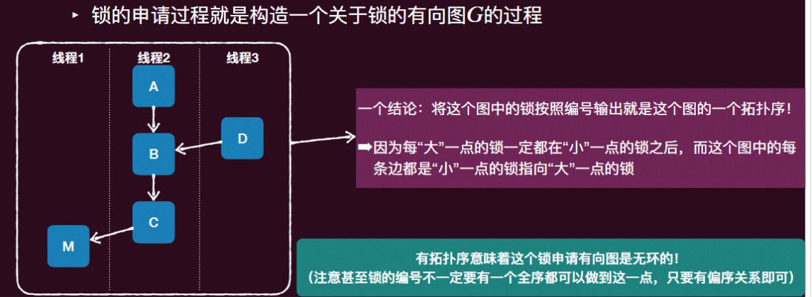
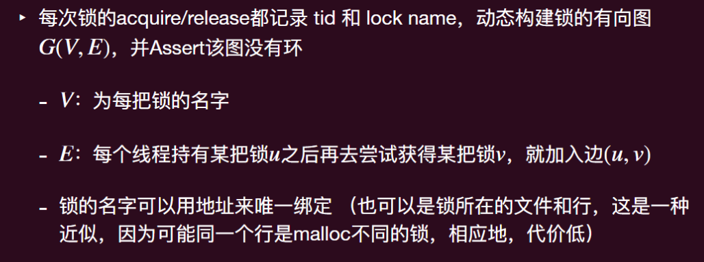
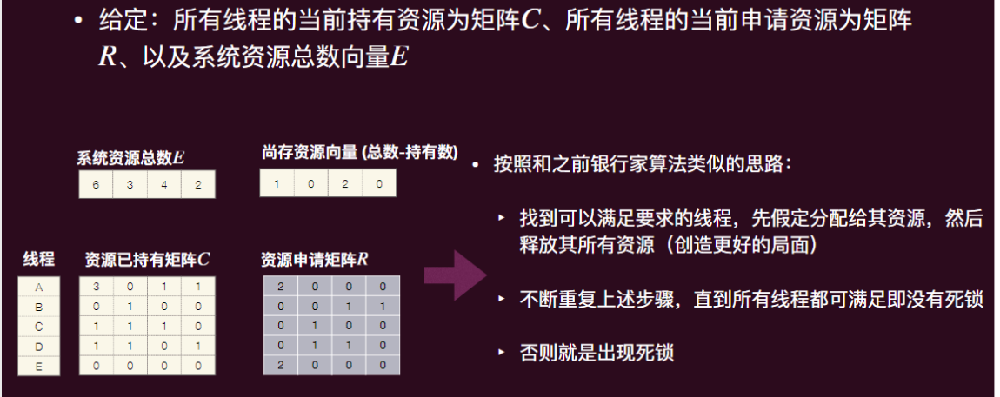
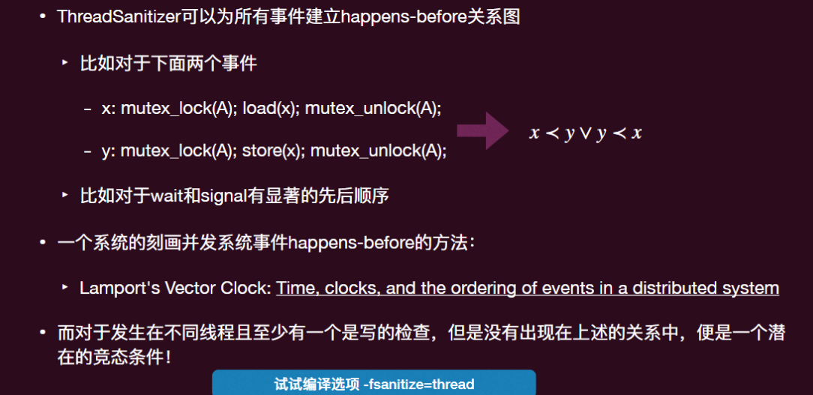

操作系统-08并发-并发bugs
原子性和顺序性 bug
并发控制机制的前提是正确使用
- 原⼦性违背 (Atomicity Violation, AV)
- ⽐如忘记上锁
- 顺序性违背 (Order Violation, OV)
- 忘记同步，或者同步条件写错
死锁
死锁类型
A-A 型死锁
- ⼀个线程在已经持有⼀把锁的情况下再次尝试获得这把锁
ABBA 型死锁
- 线程 1 拿到了锁 A，需要锁 B，线程 2 拿到了锁 B，需要锁 A，这时两个线程都⽆法⾏进
死锁产生的必要条件
- 所需要的资源是互斥的
- 互斥也可改为资源有限（Bounded resources），即能够共享的线程数有限
- 持有某个资源并等待更多资源
- 不可直接“抢”别人持有的资源，只有等待有的人主动释放
- 形成循环等待的环
处理死锁
- 忽略问题：在问题的发⽣频率很低且发⽣后代价很⼩（重启⼤法）直接忽略 (Ostrich Algorithm).
- 从源头避免死锁发生
- 检测并恢复
死锁避免：必要条件的破坏
互斥的破坏：不太容易
持有并等待的破坏：
- 要么能⼀次得到所有锁，要么什么锁也不获取
- 不现实，因为这需要线程提前就知道需要哪些锁，如果是后⾯系统根据需要才新建⼀些锁，那么其难以提前获知
- 此外，这也减少了⼀些并发度，因为如果程序很⻓时间运⾏中其实不太需要某些锁（只有在中间某段很短的时间内才需要某个锁），那么 ⼀开始就持有这把锁会限制其他线程得到这把锁并运行
- 如果此刻⽆法获得想要的锁，就释放其所有持有的锁
- 但如果锁是被封装在某个地⽅（不是显式地调⽤ lock 所得），便很难察觉需要释放这个锁
非抢占性的破坏
- 允许系统直接去“抢”别的线程所持有的资源
- 问题是不是每种资源都可以直接“抢”的
- ⼀个合理的“抢”需要被抢⾛资源的线程能够恢复到被抢前的状态
环形等待条件的破坏
- 强制在锁在申请时按照规定的顺序来（Lock ordering）
为什么按照⼀个全局的顺序就不会产⽣死锁？

死锁避免：避免陷入不可挽回状态
假设我们能够知道每个线程在其整个执⾏期间（⽽不是具体到哪个指令段）需要哪些互斥资源
- 更⼀般的，假设资源数不只为 1（信号量），我们假设能够知道每个线程在其执⾏期间需要哪些互斥资源的最⼤数量, 即每个线程有⼀个最⼤需求向量
- 所有线程的最⼤需求向量形成⼀个最⼤需求矩阵
此外相应的，我们也可以刻画当前系统状态的互斥资源的线程持有状态 - 每个线程 有⼀个当前持有资源 , 所有线程的当前持有资源为矩阵
系统初始每个资源数向量
系统的行进伴随着线程对互斥资源的申请和释放，释放资源是平凡的事件，因为释放资源不会让系统进入“不可挽回状态”，但申请资源会
- 每个线程 有一个当前资源申请向量 ，所有线程的当前申请资源为矩阵
什么样的资源申请矩阵会导致系统进入“不可挽回状态”？
- 如果接受了这个申请，导致⽆法满⾜未来的“最⼤”申请，即不可挽回
- 即⽬前虽然没有死锁，可以满⾜，但既定的未来不可满⾜
- 这个“不可挽回”状态也有⼈称为“不安全”状态
正确的决策：如果当前申请矩阵会导致系统进⼊“不可挽回”状态，拒绝，否则接受申请，更新系统状态
——银行家算法
- 找⼀个线程 ，看看其未来还需要的最⼤资源数（最⼤资源需求数-⽬前持有资源数）是否能够被⽬前系统尚存的资源数所满⾜（系统初始资源数-被所有线程所持有的资源数），如果所有线程都不能被满⾜，就是⼀个“不可挽回”的不安全状态，最终会进⼊死锁状态
- 对满⾜需求的线程 ，标记其为未来可满⾜状态，即其可以在⽬前状态下存在 ⼀个分配⽅式（⽴即全部分配其所有资源）终⽌. 那么也就存在这样的⼀个好的局⾯： 我们可以将其资源都回收
- 在步骤 2 的更好的局⾯上，重复之前的步骤，⼀直到所有线程都可以终⽌，那么该系统状态就是“可挽回”的状态，否则就是“不可挽回”
然而，这个算法是不实用的
- 我们⼀般没法知道“最⼤”需求矩阵
- 系统的资源是动态变化的
- 线程数会变化
- 资源数可能会变化（线程可以⾃⼰释放所持有的锁）
死锁的检测并处理：让他发生吧
如何检测出现了死锁？
- 死锁是由于多个线程形成⼀个等待环，⼀个线程的⾏进需要环内的另外⼀个线程所持有的锁，从⽽所有线程都⽆法⾏进
- 因此，核⼼就是检测锁申请环
死锁的动态检测
如何检测环？
- 锁的持有和申请就是一个有向图
- 有向图的环检测
- 深度优先，出现回边

如果是一类的互斥资源有多个资源数呢？单纯的环已不足来检测死锁

并发 bugs 的动态分析方法
什么是动态分析
- 给定⼀次状态机（程序）的执⾏历史信息 （⽐如⽇志 log、covering lines、 memory access…）
- 当然这种记录往往需要额外的运⾏成本（⽐如插桩）
- 动态分析即为根据这个信息的分析函数 , 0 代表关⼼问题的答案为否（⽐如没有 bug），1 代表关⼼问题的答案为是（⽐如有 bug），当然答案还可以有更多可能，那么这个值域会增⼤
AddressSanitizer: 非法内存访问
- 通过编译器⾃动插⼊和内存相关的断⾔（⽐如每次分配内存时，额外分配⼀写不可写的内存（投毒），⼀旦访问到这些被投毒的内存，就知道越界了），实现代码正确性的检查。
ThreadSanitizer: 运行时的竞态条件检测
- 回顾竞态条件 (数据竞争)：不同的线程同时访问同⼀内存，且⾄少有⼀个是写
- 基于这个定义，就能动态的检测出竞态条件
- 这些条件中，不同线程是容易观察到的（记录 thread id 即可）， 同⼀内存也是容易观察到的（内存的地址），⾄少⼀个是写是容易观察到的（load 和 store 指令）
- 关键问题是，什么是同时？ happens-before 关系！
- 让我们问⼀个反向的问题：什么不是同时
- happens-before 关系

Canary
- "牺牲” 内存单元，预警 memory error
低配版 lockdep：
- 统计当前的 spin count
- 如果超过某个明显不正常的数值 (e.g., 100,000,000) 就报告
- 来代替你对于当前系统发⽣死锁直觉
低配版 AddressSanitizer
- 实验 L1 内存分配器的 specification
低配版 ThreadSanitizer
- 竞态条件会产⽣什么后果？
- 线程的读写⼀个共享数据不是原⼦的，即在中间可能被其他线程插⼊
- 但是这个错误⼀般很难观测，因为指令的读写太快了
- 想法：通过拖慢线程读写速度，放⼤原⼦性破坏的可能性（执⾏时间越⻓，被其他线程⼲涉的可能性越⼤）
- 线程的读写⼀个共享数据不是原⼦的，即在中间可能被其他线程插⼊
低配版的意义
- 给定⼀个程序正确运⾏的 specification，原则上我们能够写出动态分析的⽅法验证程序运⾏时有没有破坏这个 specification
- 但有时候验证⼀个完整的 specification 过于复杂或者条件不允许（⽐如我们的实验，⽐如计算资源受限）
- 但此时如果能够从这个 full specification 推出⼀些弱化的 specification，从⽽更加容易的实现⼀些 Sanitizer，那么即使精度可能没那么⾼，但实际中会有很好的效果！
总结
即使已经学了很多并发控制的⼯具，⼈类依然会犯错
死锁就是其中⼀⼤类
- 死锁可以通过破坏其必要条件来避免
- 也可以通过动态的合理分配来避免
- 也可以通过动态分析来检测
操作系统-08并发-并发bugs
https://astronautbase.github.io/2025/08/25/操作系统-08并发-并发bugs/